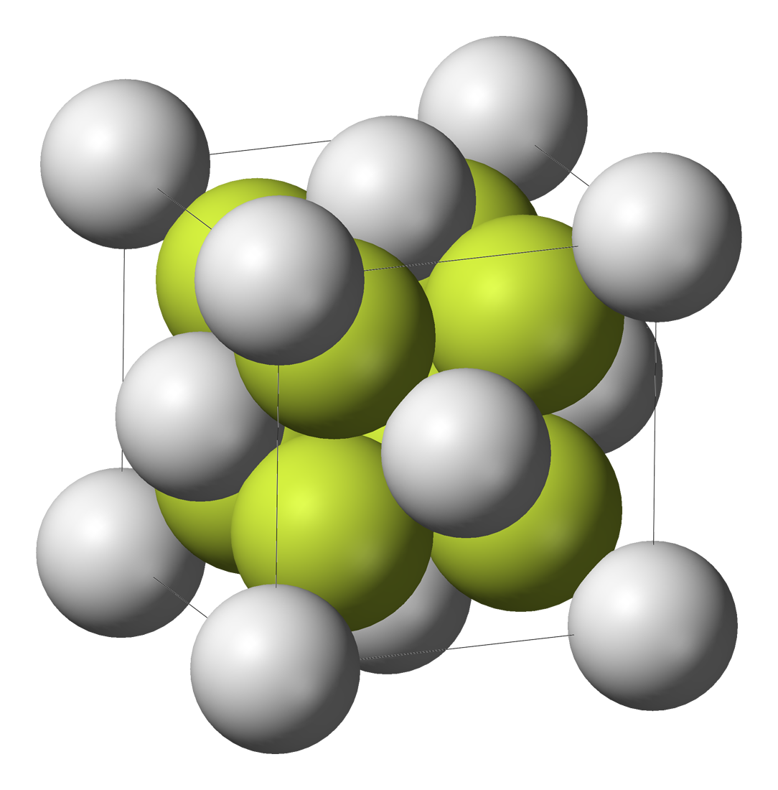
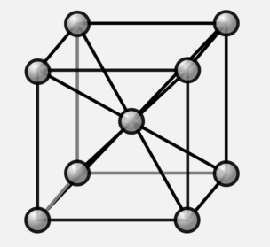
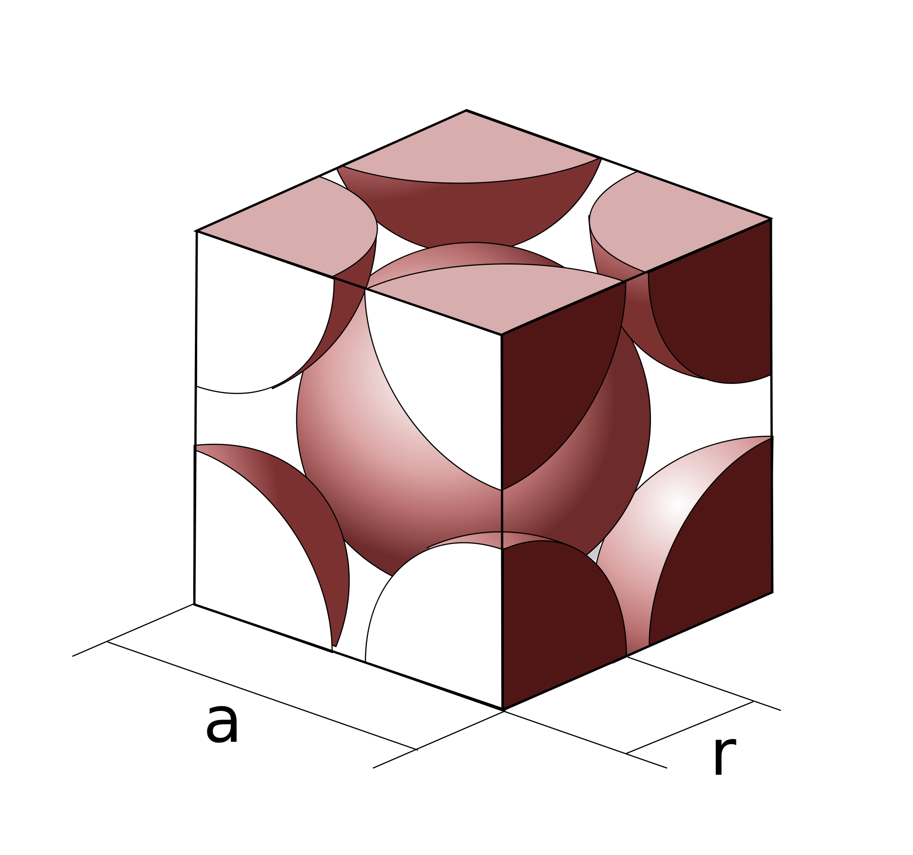
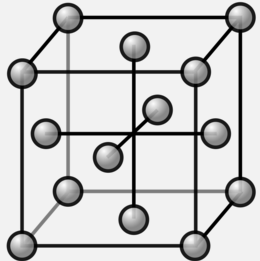
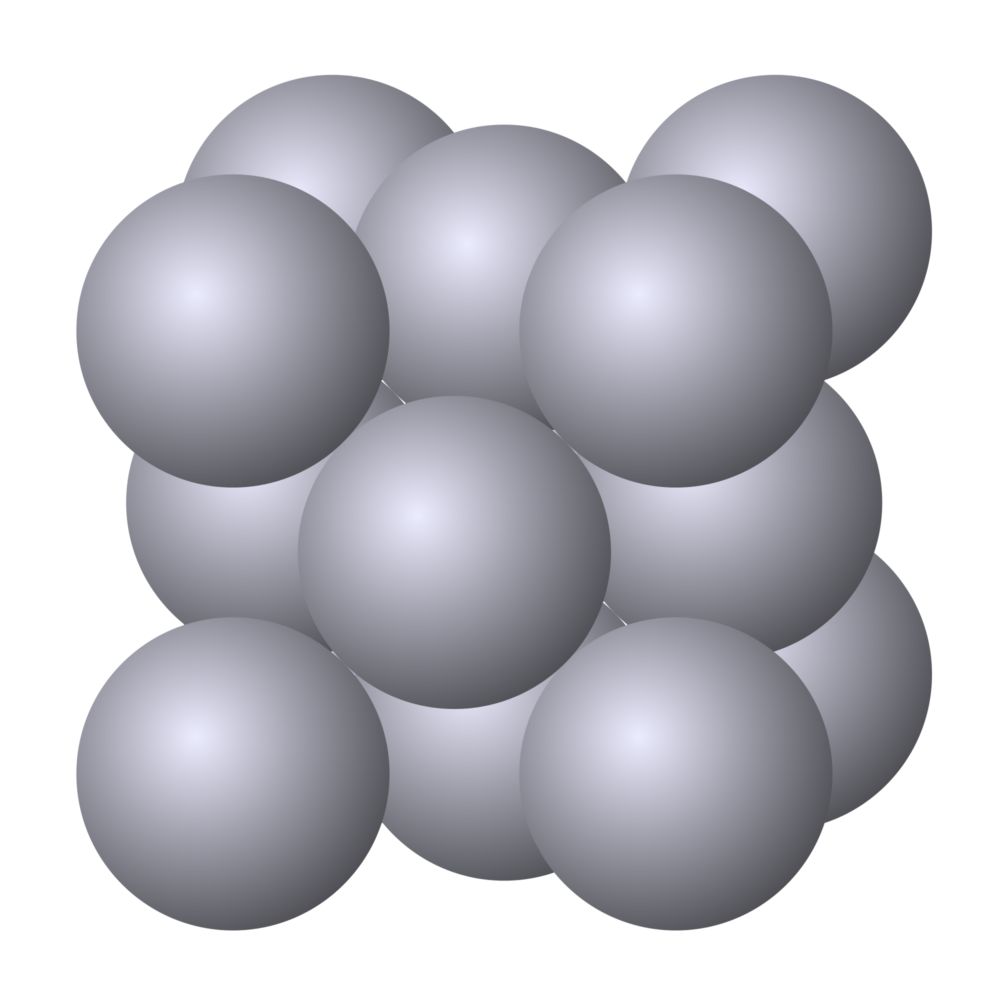
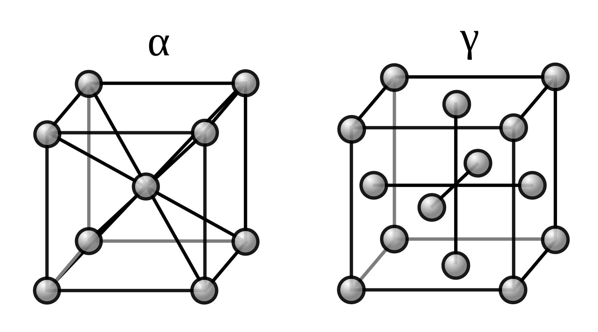

Solids are categorized by their low compressibility and fixed volume & shape. We looked at the basic structure of a solid earlier on in this section, where solids were described as the state of matter with tightly packed atoms.
It turns out that there are various structures that solids tend to orient themselves in which are unique to the solid state. Crystalline solids exhibit long range patterns in structure, which almost no other state of matter does.

When considering the structure of solids, we consider the unit cell. The unit cell is defined as the smallest repeating unit of the solid. If you look up a picture of any solid, chances are you'll get a picture like the one to the left. Images like this convey a large number of unit cells. In this section, we'll be looking at the individual unit cells.

Another term you want to familiarize yourself with is the atomic packing factor (APF). This is a number that refers to the portion of a unit cell that is taken up by atoms. Notice that, while atomic structures may be drawn with small spheres and lines, the reality looks more like the structure on the left. Atoms actually take up a majority of the space in a unit cell!
A way of thinking about the APF is by considering the unit cell as a room and atoms as furniture. If the furniture takes up a lot of the room, the APF will be very high. Conversely, if the furniture takes up little room, then the APF will be low. The APF tells you how much space in the cell is taken up.
The atomic packing factor is defined as the `"Total volume of atoms"/"Total volume of unit cell"` , which turns out to have a maximum value of 0.74 for any known unit cell.
The final term we'll go over is the slip plane. A slip plane exists when atoms are packed closely together, such as the arrangement in the right. When atoms in a slip plane have a force exerted on them, they can slide and slip over each other in response. For example, if one pushes the top row of atoms in the left arrangement, the atoms can all shift over to become like the arrangement on the right. Since solid materials are composed of a large number of unit cells, a solid with slip planes will be able to change its shape in response to force.
To visualize slip planes, imagine a room with beach balls all over the floor. If the beach balls are closely packed, then pushing lightly on one beach ball will move all the beach balls in a line. If the beach balls are spread apart, pushing lightly on one beach ball will only affect that one beach ball. This is why solids with slip planes are able to change shape: pushing in one direction on the solid causes entire planes to shift.
When a slip plane doesn't exist, it becomes difficult to slide entire planes of atoms. This gives the general property that atoms with slip planes will be ductile whereas atoms without slip planes will be hard.
The body centered cubic structure has, as the name implies, a body centered atom.

The total number of atoms in a BCC is 2. Each of the corner atoms is `1/8` of a full atom. The atom in the body centered position is 1 entire atom. In total, this leads to `8 "corner atoms" + 1 "center atom"=8(1/8) + 1=2` total atoms for each BCC unit cell. The `1/8` and `1/2` can be found by visualizing the "chopping" of the atoms. If you look at the above unit cell, you'll notice that only parts of the atoms

The APF of a BCC structure is approximately `0.68`. This is a relatively high packing factor which means that the cell is decently filled up. You can see just exactly how packed a BCC structure is when you look at the picture to the left.
BCC materials are usually harder than materials of other unit cells due to the lack of slip planes. This is not to say that BCC materials possess no slip planes, but that they possess less than other solids. Some common BCC materials are sodium, potassium, chromium, and tungsten.

The face centered cubic structure has 8 corner atoms and `1/2` an atom at each face (ergo, face centered). In total, this adds up to `8 "corner atoms" + 6 "atoms in faces"=8(1/8)+6(1/2)=4` total atoms in each FCC unit cell.

The APF of each FCC unit cell is `0.74`, which as we remarked earlier is the highest possible APF. This means that FCC unit cells are as closely packed as physically possible, and thus possess multiple slip planes. Much of the properties of FCC materials comes from this close packing.
FCC materials are ductile due to the existence of slip planes. A common example of an FCC material is gold, which interestingly enough is too ductile to be sold as jewelry in its pure form. This is discussed more at the end of this post.
Crystalline solids are composed of many repeating unit cells.
The unit cell is the smallest repeating unit of a solid.
The atomic packing factor (APF) represents the amount of space in the cell that is taken up by atoms.
The highest atomic packing factor that exists is 0.74.
Slip planes exist when atoms are closely packed along a plane. A slip plane will slide in response to a force.
BCC materials are generally harder and less ductile than FCC materials.
FCC materials are ductile.
1. Do any solids change unit cells?
Yes! One example is Iron, which changes between BCC and FCC unit cells.
Both of these structures are iron! Α-Fe, the BCC structure, exists at higher temperatures whereas Γ-Fe, the FCC structure, exists at lower temperatures. At a certain temperature, the iron will change from one cell to the other!
2. Cool things about gold.
Due to its FCC unit cell, gold is a very ductile and mallaeble material. In fact, pure gold is incredibly soft and will just move around if you ever played with it. If you bought a ring of pure gold, everytime you touched the ring, it would change shape! This is obviously not a desired quality in jewelry. This is why gold jewelry is sold as an alloy, where gold is mixed with some material. 24 karat (kt) gold is 100% pure gold and is essentially never sold. 18 kt gold is 75% gold and is hard enough that it won't dent easily. If anyone ever tries to sell you pure gold jewelry, know that it's probably not pure gold!